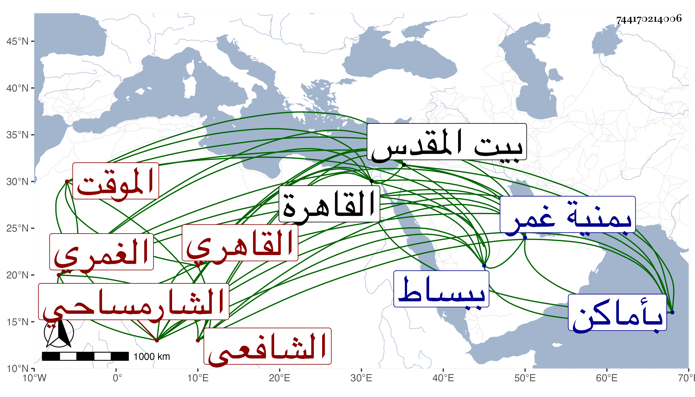

0902Sakhawi.DawLamic.ITO20230111-ara1.EIS1600.744170214006
Biography ID: 744170214006
413
الحسن بن عبد الرحمن بن عثمان فخر الدين الشارمساحي الاصل الغمري ثم القاهري الشافعي الموقت . ولد سنة ثمان عشرة وثمانمائة تقريبا ببساط في توجه أبويه لمنية غمر ونشأ بمنية غمر فحفظ القرآن وقدم القاهرة وصحب أبا عبد الله الغمري وعمل الرياسة بجامعه والترقية ، وهو ممن أخذ في الميقات عن عبد الرحيم بن رزين بل أخذ يسيرا عن الشهاب بن المجدي ثم عن البدر المارداني وتميز في ذلك واشتغل بالفقه والعربية قليلا وسمع على شيخنا وغيره بل قرأ البخاري على البهاء بن المصري وكذا قرأ علي ولازمني وباشر الرياسة بأماكن وأقرأ الابناء ثم بأخرة تكسب أيضا بالشهادة وربما خطب نيابة وحج عشرا وجاور غير مرة وكذا أقام ببيت المقدس نحو سنتين ثم رجع ومات في سنة ثلاث وتسعين
